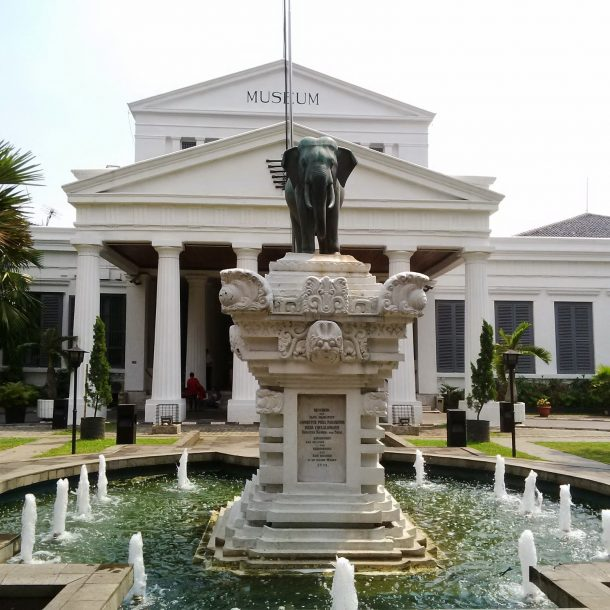

Jakarta menawarkan berbagai pilihan tujuan wisata yang cocok untuk segala kalangan, mulai dari wisata keluarga, alam, budaya, edukasi, hingga kuliner. Kota ini memiliki beragam tempat wisata yang juga menjadi ikon daerah, membuatnya ideal bagi para wisatawan pemula yang memiliki waktu liburan terbatas.Ingin mengetahui tempat-tempat wisata menarik di Jakarta? Berikut adalah rekomendasi 10 tempat wisata di Jakarta yang sebaiknya kamu kunjungi saat berada di ibu kota negara Indonesia:

1. Taman Mini Indonesia Indah
Taman Mini Indonesia Indah (TMII) adalah sebuah kompleks wisata yang menawarkan miniatur budaya Indonesia yang menakjubkan. Di sini, pengunjung dapat menjelajahi Indonesia dalam satu tempat dengan melihat replika bangunan ikonik, pakaian tradisional, tarian, dan adat istiadat dari berbagai provinsi di Indonesia.

2. Pantai Ancol
Pantai Ancol adalah salah satu pantai terpopuler di Jakarta, terletak di dalam kawasan rekreasi Ancol Dreamland. Pantai ini menawarkan gabungan antara pesona alam dan fasilitas rekreasi yang lengkap. Pasir putih yang lembut dan luasnya area pantai menciptakan suasana yang menenangkan bagi pengunjung.

3. Museum Nasional Indonesia
Museum Nasional Indonesia adalah museum di Jakarta Pusat yang menyimpan koleksi prasasti, arca, senjata tradisional, tekstil, gerabah, manuskrip, hasil penggalian arkeologis, serta benda kuno lainnya dari berbagai wilayah Nusantara. Tempat wisata di Jakarta Pusat ini berdiri sejak tahun 1778, dan kini terkenal sebagai salah satu museum terbesar di Asia Tenggara. Museum Nasional juga dikenal sebagai "Museum Gajah", karena patung gajah yang ada di halamannya.

4. Kota Tua Jakarta
Tidak heran, jika suasana Kota Tua Jakarta selalu ramai pada akhir pekan. Penyebabnya, adalah karena ketersediaan beragam spot yang cantik bahkan mampu "menunjang" kegiatan selfie Anda. Bayangkan, deretan pertokoan, gedung, hingga rumah-rumah tua menghiasi seluruh area Kota Tua Jakarta. Belum lagi, dengan keberadaan beragam atraksi dan kegiatan, seperti halnya pameran seni, nobar (nonton bareng), pengamen unik, dsb.

5. Dunia Fantasi - Dufan
Dunia Fantasi adalah taman hiburan keluarga di area Taman Impian Jaya Ancol. Taman ini menawarkan beragam wahana, mulai dari yang menegangkan seperti Tornado, Halilintar dan Hysteria, hingga yang cocok untuk semua umur seperti Rumah Miring, Poci-Poci, Turangga Rangga, dan Pontang-Pontang.